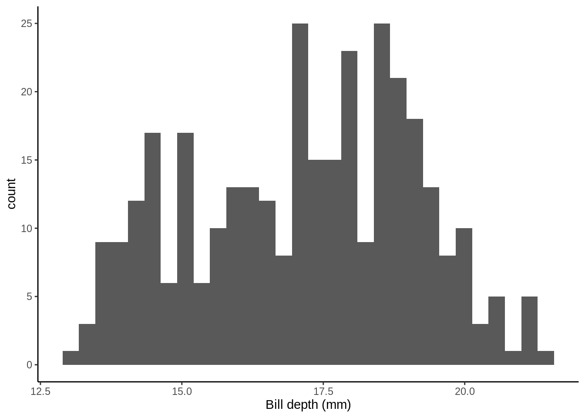
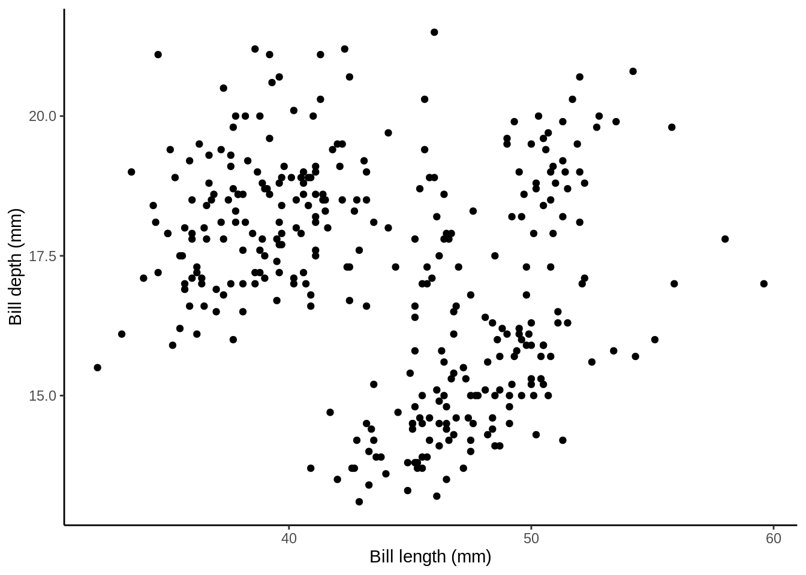
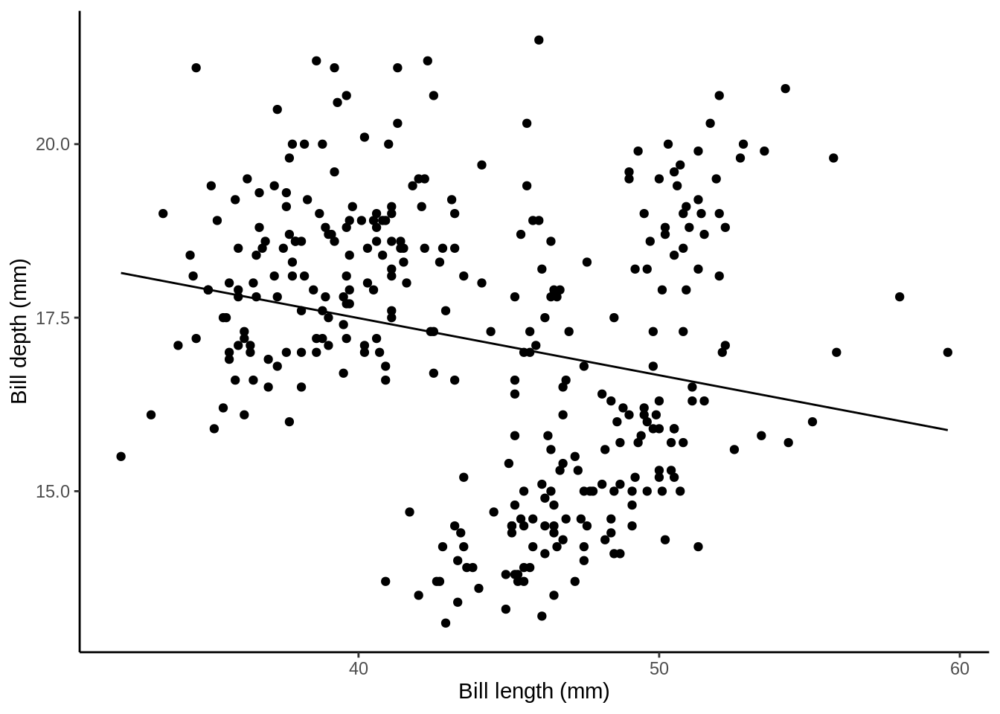
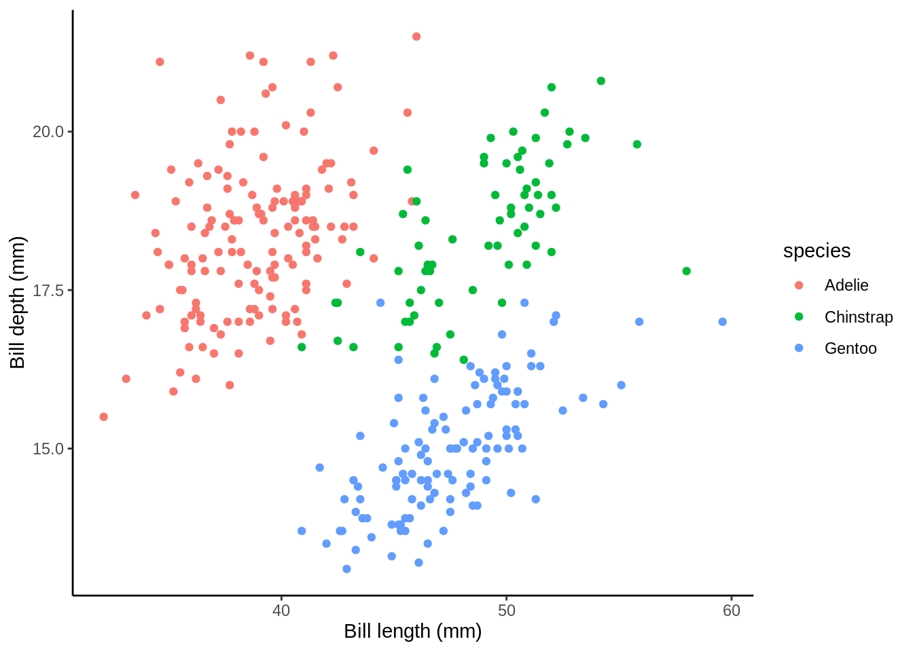

4 Statistical Inference
4.1 Learning Objectives
- Carry out and interpret tests for the existence of relationships between explanatory variables and the response in a linear model
- Write R code to fit a linear model with a single continuous explanatory variable
- Write R code to fit a linear model with a continuous explanatory variable and a factor explanatory variable
- Interpret estimated effects with reference to confidence intervals from linear regression models. Specifically the interpretation of
- the intercept
- the effect of a factor
- the effect of a one-unit increase in a numeric variable
- the effect of an x-unit increase in a numeric variable
- Make a point prediction of the response for a new observation
- Write R code to fit a linear model with interaction terms in the explanatory variables
- Interpret estimated effects with reference to confidence intervals from linear regression models. Specifically the interpretation of
- main effects in a model with an interaction
- the effect of one variable when others are included in the model
- Explain why you may want to include interaction effects in a linear model
- Describe the differences between the operators
:and*in anRmodel-fitting formula
4.2 Regression

4.2.1 Some mathematical notation
Let's consider a linear regression with a simple explanatory variable:
\[Y_i = \alpha + \beta_1x_i + \epsilon_i\] where
\[\epsilon_i \sim \text{Normal}(0,\sigma^2).\]
Here for observation \(i\)
- \(Y_i\) is the value of the response
- \(x_i\) is the value of the explanatory variable
- \(\epsilon_i\) is the error term: the difference between \(Y_i\) and its expected value
- \(\alpha\) is the intercept term (a parameter to be estimated), and
- \(\beta_1\) is the slope: coefficient of the explanatory variable (a parameter to be estimated), and
Does this remind you of anything?

4.2.2 Modeling Bill Depth

Key assumptions
- Independence
- There is a linear relationship between the response and the explanatory variables
- The residuals have constant variance
- The residuals are normally distributed
library(tidyverse)
library(palmerpenguins)
penguins_nafree <- penguins %>% drop_na()ggplot(data = penguins_nafree, aes(x = bill_depth_mm)) +
geom_histogram() + theme_classic() +
xlab("Bill depth (mm)")
First off let's fit a null (intercept only) model. This in old money would be called a one sample t-test.
slm_null <- lm(bill_depth_mm ~ 1, data = penguins_nafree)
summary(slm_null)$coef## Estimate Std. Error t value Pr(>|t|)
## (Intercept) 17.16486 0.1079134 159.0614 1.965076e-315Model formula
The (Intercept) term, 17.1648649, tells us the average value of the response (bill_depth_mm), see
penguins_nafree %>% summarise(average_bill_depth = mean(bill_depth_mm))## # A tibble: 1 x 1
## average_bill_depth
## <dbl>
## 1 17.2Inference
The SEM (Std. Error) = 0.1079134.
The hypothesis being tested is \(H_0:\) ((Intercept) ) \(\text{mean}_{\text{`average_bill_depth`}} = 0\) vs. \(H_1:\) ((Intercept)) \(\text{mean}_{\text{`average_bill_depth`}} \neq 0\)
The t-statistic is given by t value = Estimate + Std. Error = 159.0614207
The p-value is given byPr (>|t|) = 1.965076110^{-315}.
So the probability of observing a t-statistic as least as extreme given under the null hypothesis (average bill depth = 0) given our data is 1.965076110^{-315}, pretty strong evidence against the null hypothesis I'd say!
4.2.3 Single continuous variable
Does bill_length_mm help explain some of the variation in bill_depth_mm?
p1 <- ggplot(data = penguins_nafree, aes(x = bill_length_mm, y = bill_depth_mm)) +
geom_point() + ylab("Bill depth (mm)") +
xlab("Bill length (mm)") + theme_classic()
p1
slm <- lm(bill_depth_mm ~ bill_length_mm, data = penguins_nafree)Model formula
\[ \begin{aligned} \operatorname{bill\_depth\_mm} &= \alpha + \beta_{1}(\operatorname{bill\_length\_mm}) + \epsilon \end{aligned} \]
Fitted model
summary(slm)$coef## Estimate Std. Error t value Pr(>|t|)
## (Intercept) 20.78664867 0.85417308 24.335406 1.026904e-75
## bill_length_mm -0.08232675 0.01926835 -4.272642 2.528290e-05Here, the (Intercept): Estimate gives us the estimated average bill depth (mm) given the estimated relationship bill length (mm) and bill length.
The bill_length_mm : Estimate (think of \(\beta_1\) above) is the slope associated with bill length (mm). So, here for every 1mm increase in bill length we estimated a 0.082mm decrease (or a -0.082mm increase) in bill depth.
## calculate predicted values
penguins_nafree$pred_vals <- predict(slm)
## plot
ggplot(data = penguins_nafree, aes(x = bill_length_mm, y = bill_depth_mm)) +
geom_point() + ylab("Bill depth (mm)") +
xlab("Bill length (mm)") + theme_classic() +
geom_line(aes(y = pred_vals))
4.2.4 Factor and a continous variable
Adding species
p2 <- ggplot(data = penguins_nafree, aes(y = bill_depth_mm, x = bill_length_mm, color = species)) +
geom_point() + ylab("Bill depth (mm)") +
xlab("Bill length (mm)") + theme_classic()
p2
slm_sp <- lm(bill_depth_mm ~ bill_length_mm + species, data = penguins_nafree)Model formula
\[ \begin{aligned} \operatorname{bill\_depth\_mm} &= \alpha + \beta_{1}(\operatorname{bill\_length\_mm}) + \beta_{2}(\operatorname{species}_{\operatorname{Chinstrap}}) + \beta_{3}(\operatorname{species}_{\operatorname{Gentoo}})\ + \\ &\quad \epsilon \end{aligned} \]
Fitted model
summary(slm_sp)$coef## Estimate Std. Error t value Pr(>|t|)
## (Intercept) 10.5652616 0.69092642 15.291442 2.977289e-40
## bill_length_mm 0.2004431 0.01767974 11.337449 2.258955e-25
## speciesChinstrap -1.9330779 0.22571878 -8.564099 4.259893e-16
## speciesGentoo -5.1033153 0.19439523 -26.252267 1.043789e-82Simpson's paradox... look how the slopes have switched direction from the model above.
Remember when we have factor explanatory variables (e.g., species) we have to use dummy variables, see lecture. Here the Adelie group are the baseline (R does this alphabetically, to change this see previous chapter).
Here, the (Intercept): Estimate gives us the estimated average bill depth (mm) of the Adelie penguins given the ther variables in the model.
The bill_length_mm : Estimate (think of \(\beta_1\) above) is the slope associated with bill length (mm). So, here for every 1mm increase in bill length we estimated a 0.082mm decrease (or a -0.082mm increase) in bill depth.
## calculate predicted values
penguins_nafree$pred_vals <- predict(slm_sp)
## plot
ggplot(data = penguins_nafree, aes(y = bill_depth_mm, x = bill_length_mm, color = species)) +
geom_point() + ylab("Bill depth (mm)") +
xlab("Bill length (mm)") + theme_classic() +
geom_line(aes(y = pred_vals))4.2.5 Interactions
Recap
\[Y_i = \beta_0 + \beta_1z_i + \beta_2x_i + \epsilon_i\] \[\epsilon_i \sim \text{Normal}(0,\sigma^2)\] Here for observation \(i\)
- \(Y_i\) is the value of the response
- \(z_i\) is one explanatory variable
- \(x_i\) is another explanatory variable
- \(\epsilon_i\) is the error term: the difference between \(Y_i\) and its expected value
But what about interactions? For example,
\[Y_i = \beta_0 + \beta_1z_i + \beta_2x_i + \beta_3z_ix_i + \epsilon_i\] \[\epsilon_i \sim \text{Normal}(0,\sigma^2)\]
Note: to include interaction effects in our model by using either the * or : syntax in our model formula. See [Model formula syntax] for further details.
slm_int <- lm(bill_depth_mm ~ bill_length_mm*species, data = penguins_nafree)Model formula
\[ \begin{aligned} \operatorname{bill\_depth\_mm} &= \alpha + \beta_{1}(\operatorname{bill\_length\_mm}) + \beta_{2}(\operatorname{species}_{\operatorname{Chinstrap}}) + \beta_{3}(\operatorname{species}_{\operatorname{Gentoo}})\ + \\ &\quad \beta_{4}(\operatorname{bill\_length\_mm} \times \operatorname{species}_{\operatorname{Chinstrap}}) + \beta_{5}(\operatorname{bill\_length\_mm} \times \operatorname{species}_{\operatorname{Gentoo}}) + \epsilon \end{aligned} \]
Fitted model
summary(slm_int)$coef## Estimate Std. Error t value Pr(>|t|)
## (Intercept) 11.48770713 1.15987305 9.9042797 2.135979e-20
## bill_length_mm 0.17668344 0.02980564 5.9278518 7.793199e-09
## speciesChinstrap -3.91856701 2.06730876 -1.8954919 5.890889e-02
## speciesGentoo -6.36675118 1.77989710 -3.5770333 4.000274e-04
## bill_length_mm:speciesChinstrap 0.04552828 0.04594283 0.9909769 3.224296e-01
## bill_length_mm:speciesGentoo 0.03092816 0.04111608 0.7522157 4.524625e-01## calculate predicted values
penguins_nafree$pred_vals <- predict(slm_int)
## plot
ggplot(data = penguins_nafree, aes(y = bill_depth_mm, x = bill_length_mm, color = species)) +
geom_point() + ylab("Bill depth (mm)") +
xlab("Bill length (mm)") + theme_classic() +
geom_line(aes(y = pred_vals))Are the non-parallel lines non-parallel enough to reject the parallel line model? (more below)
4.2.5.1 Model formula syntax
In R to specify the model you want to fit you typically create a model formula object; this is usually then passed as the first argument to the model fitting function (e.g., lm()).
Some notes on syntax:
Consider the model formula example y ~ x + z + x:z. There is a lot going on here:
- The variable to the left of
~specifies the response, everything to the right specify the explanatory variables +indicated to include the variable to the left of it and to the right of it (it does not mean they should be summed):denotes the interaction of the variables to its left and right
Additional, some other symbols have special meanings in model formula:
*means to include all main effects and interactions, soa*bis the same asa + b + a:b^is used to include main effects and interactions up to a specified level. For example,(a + b + c)^2is equivalent toa + b + c + a:b + a:c + b:c(note(a + b + c)^3would also adda:b:c)-excludes terms that might otherwise be included. For example,-1excludes the intercept otherwise included by default, anda*b - bwould producea + a:b
Mathematical functions can also be directly used in the model formula to transform a variable directly (e.g., y ~ exp(x) + log(z) + x:z). One thing that may seem counter intuitive is in creating polynomial expressions (e.g., \(x^2\)). Here the expression y ~ x^2 does not relate to squaring the explanatory variable \(x\) (this is to do with the syntax ^ you see above. To include \(x^2\) as a term in our model we have to use the I() (the "as-is" operator). For example, y ~ I(x^2)).
4.3 Model, comparison, selection, and checking (again)
Remember that it is always is imperative that we check the underlying assumptions of our model! If our assumptions are not met then basically the maths falls over and we can't reliably draw inference from the model (e.g., can't trust the parameter estimates etc.). Two of the most important assumption are:
equal variances (homogeneity of variance), and
normality of residuals.
4.3.1 Model comparison and selection
Are the non-parallel lines non-parallel enough to reject the parallel line model?
We can compare nested\(^*\) linear models by hypothesis testing. Luckily the R function anova() automates this. Yes the same idea as we've previously learnt about ANOVA! We essentially perform an F-ratio test between the nested models!
\(^*\)By nested we mean that one model is a subset of the other (i.e., where some coefficients have been fixed at zero). For example,
\[Y_i = \beta_0 + \beta_1z_i + \epsilon_i\]
is a nested version of
\[Y_i = \beta_0 + \beta_1z_i + \beta_2x_i + \epsilon_i\] where \(\beta_2\) has been fixed to zero.
As an example consider testing the null model slm_null against the full model with interactions slm_int. To carry out the appropriate hypothesis test in R we can run
anova(mod.no.c,mod.interaction)The Akaike information criterion (AIC) from Module 2 of the course. AICs an estimator of out-of-sample prediction error and can be used as a metric to choose between competing models. R already has an AIC() function that can be used directly on your lm() model object(s). For example,
AIC(mod.add,mod.interaction)This backs up what our AIC values indicated. The p-value tells us that we have really strong evidence (p-value is exceptionally low) against the null model (mod.no.c) in favor of the model that includes interactions!
As always it's important to do a sanity check! Does this make sense? Based on what we know about C02 emissions and food types I'd say YES!
4.4 Confidence intervals
confint(multiple.mod)4.4.1 Interpreting confidence intervals
For every 1mm increase in mesosoma length we estimate the expected sting length to increases between
round(confint(multiple.mod)[9,1],1)andround(confint(multiple.mod)[9,2],1)mmWe estimate that the expected sting length of a species predated by Immature Hymenoptera is between
round(confint(multiple.mod)[6,1],1)andround(confint(multiple.mod)[6,2],1)mm longer than that predated by Coleoptera with the same sting length
4.4.1.1 Point prediction
For species predated by Immature Hymenoptera with mesosomal length 5mm
\[\hat{\text{Age}} = \hat{\beta_0} + \hat{\beta_5}*1 + \hat{\beta_8}*5\] \[\downarrow\]
\[\hat{\text{Age}} = -0.99 + 4.25*1 + 0.87*5\] \[\downarrow\]
\[7.61\]
4.4.1.2 In R
## create new data frame with data we want to predict to
newdata <- data.frame(prey_graph = "Immature Hymenoptera",mesosoma = 5)
## use predict() function
predict(multiple.mod, newdata = newdata)
## round to 2 d.p
round(predict(multiple.mod, newdata = newdata),2)4.5 TL;DR lm()
| Traditional name | Model formula | R code |
|---|---|---|
| Simple regression | \(Y \sim X_{continuous}\) | lm(Y ~ X) |
| One-way ANOVA | \(Y \sim X_{categorical}\) | lm(Y ~ X) |
| Two-way ANOVA | \(Y \sim X1_{categorical} + X2_{categorical}\) | lm(Y ~ X1 + X2) |
| ANCOVA | \(Y \sim X1_{continuous} + X2_{categorical}\) | lm(Y ~ X1 + X2) |
| Multiple regression | \(Y \sim X1_{continuous} + X2_{continuous}\) | lm(Y ~ X1 + X2) |
| Factorial ANOVA | \(Y \sim X1_{categorical} * X2_{categorical}\) | lm(Y ~ X1 * X2) or lm(Y ~ X1 + X2 + X1:X2) |

Meet your MLR teaching assistants

Interpret coefficients for categorical predictor variables

Interpret coefficients for continuous predictor variables

Make predictions using the regression model

Residuals

Check residuals for normality
4.6 Other resources: optional but recommended
4.7 Beyond Linear Models to Generalised Linear Models (GLMs) (not examinable)
Recall the assumptions of a linear model
- The \(i\)th observation's response, \(Y_i\), comes from a normal distribution
- Its mean, \(\mu_i\), is a linear combination of the explanatory terms
- Its variance, \(\sigma^2\), is the same for all observations
- Each observation's response is independent of all others
But, what if we want to rid ourselves from a model with normal errors?
The answer: Generalised Linear Models.
4.7.1 Counting animals...
A normal distribution does not adequately describe the response, the number of animals
- It is a continuous distribution, but the response is discrete
- It is symmetric, but the response is unlikely to be so
- It is unbounded, and assumes it is plausible for the response to be negative
I addition, a linear regression model typically assumes constant variance, but int his situation this unlikely to be the case.
So why assume a normal distribution? Let's use a Poisson distribution instead.
\[\begin{equation*} \mu_i = \beta_0 + \beta_1 x_i, \end{equation*}\] So \[\begin{equation*} Y_i \sim \text{Normal}(\mu_i\, \sigma^2), \end{equation*}\]becomes
\[\begin{equation*} Y_i \sim \text{Poisson}(\mu_i), \end{equation*}\]The Poisson distribution is commonly used as a general-purpose distribution for counts. A key feature of this distribution is \(\text{Var}(Y_i) = \mu_i\), so we expect the variance to increase with the mean.
4.7.2 Other modelling approaches (for interest only)
R function |
Use |
|---|---|
glm() |
Fit a linear model with a specific error structure specified using the family = argument (Poisson, binomial, gamma) |
gam() |
Fit a generalised additive model. The R package mgcv must be loaded |
lme() and nlme() |
Fit linear and non-linear mixed effects models. The R package nlme must be loaded |
lmer() |
Fit linear and generalised linear and non-linear mixed effects models. The package lme4 must be installed and loaded |
gls() |
Fit generalised least squares models. The R package nlme must be loaded |